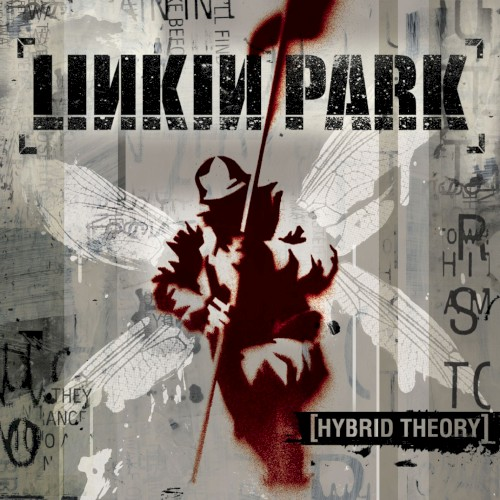
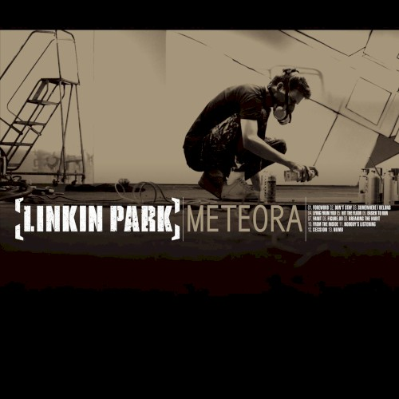
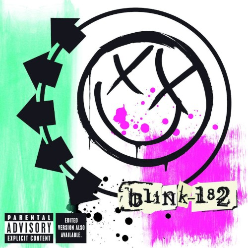
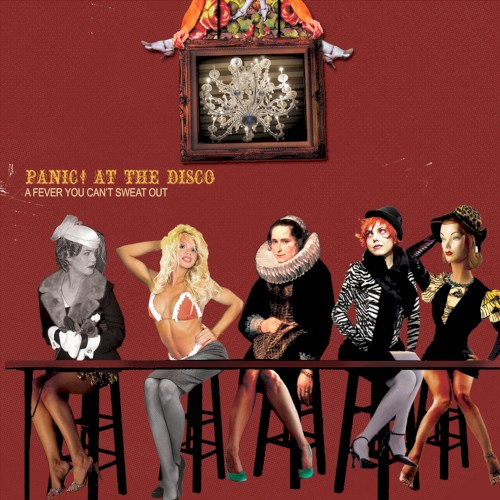
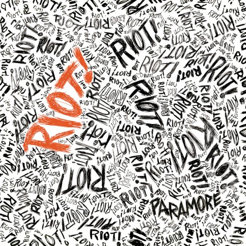
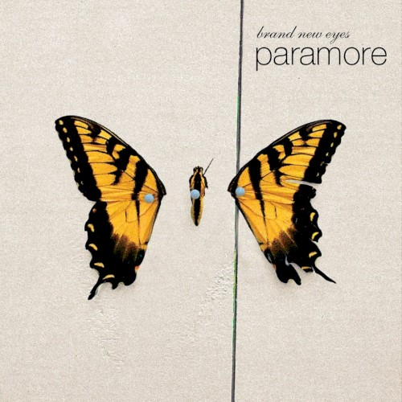

Wavelengths
Álbuns que me formaram






Role para ouvir
Filtrar por gênero
Mostrando 8 de 8 álbuns
Mostrar mais
Clima do álbum
Faixa favorita:
Álbuns que me formaram






Role para ouvir
Mostrando 8 de 8 álbuns
Clima do álbum
Faixa favorita: